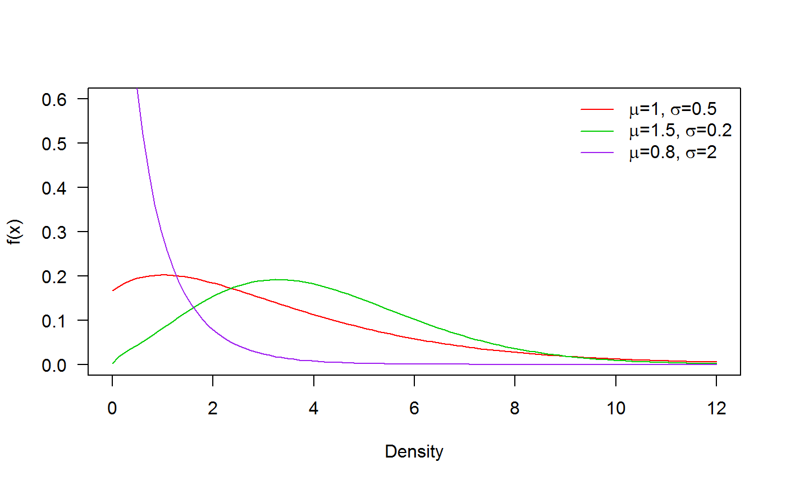
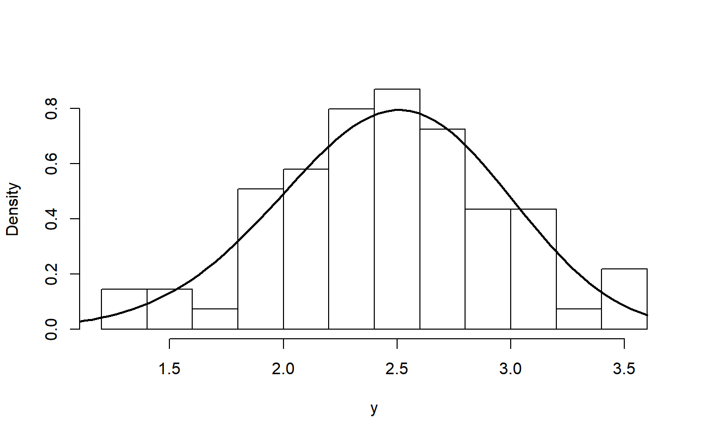
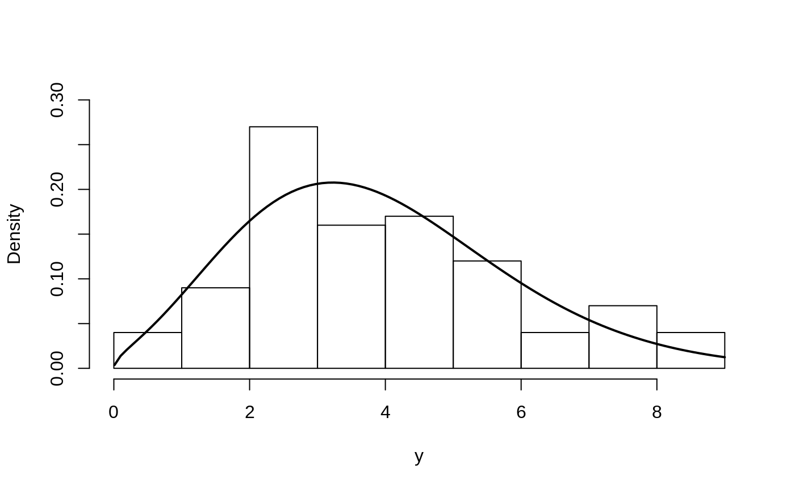

PL_distribution.RmdIn this vignette we explore the Power Lindley distribution.
The distribution was proposed by Ghitanya (2013).
\[f(x) = \frac{\mu \sigma^2}{\sigma + 1} (1 + x^\mu) x ^ {\mu - 1} \exp({-\sigma x ^\mu}), \quad x>0,\]
where \(\mu\), \(\sigma\) > 0; \(\mu\) is a shape parameter and \(\sigma\) is a scale parameter.
Next figure shows possible shapes of the probability density function for several values of the parameters:

The tensile strength, measured in GPa, of 69 carbon fibers tested under tension at gauge lengths of 20 mm are in vector y and the objective is to find the parameters for the Power Lindley distribution.
y <- c(1.312, 1.314, 1.479, 1.552, 1.700, 1.803, 1.861, 1.865, 1.944, 1.958, 1.966, 1.997, 2.006, 2.021, 2.027, 2.055, 2.063, 2.098,
2.14, 2.179, 2.224, 2.240, 2.253, 2.270, 2.272, 2.274, 2.301, 2.301, 2.359, 2.382, 2.382, 2.426, 2.434, 2.435, 2.478, 2.490, 2.511,
2.514, 2.535, 2.554, 2.566, 2.57, 2.586, 2.629, 2.633, 2.642, 2.648, 2.684, 2.697, 2.726, 2.770, 2.773, 2.800, 2.809, 2.818, 2.821,
2.848, 2.88, 2.954, 3.012, 3.067, 3.084, 3.090, 3.096, 3.128, 3.233, 3.433, 3.585, 3.585)To estimate the parameters for the Power Lindley distribution we use the gamlss function from gamlss package.
require(RelDists)
require(gamlss)
mod <- gamlss(y~1, sigma.fo=~1, family='PL',
control=gamlss.control(n.cyc=1500, trace=FALSE))The results for the fitted model can be found below.
exp(coef(mod, what='mu'))
## (Intercept)
## 3.842391
exp(coef(mod, what='sigma'))
## (Intercept)
## 0.05093744In the next figure we have the histogram for the data and the fitted density. We note that the fitted density explains better the observed data.
hist(y, freq=FALSE, breaks=15, main='')
curve(dPL(x, mu=3.842, sigma=0.050), from=0.01, add=TRUE, lwd=2)
First, we simulate 100 values for the distribution using known parameters.
Now we use the gamlss function from gamlss package to estimate the parameters.
To obtain the fitted values for \(\mu\) and \(\sigma\) we use the inverse link function \(\log()\).
exp(coef(mod, what='mu'))
## (Intercept)
## 1.604594
exp(coef(mod, what='sigma'))
## (Intercept)
## 0.1800659The results show that estimated parameters are close to the true parameters \(\mu\) and \(\sigma\).
In the next figure we have the histogram for the data and the fitted density. We note that the fitted density explains better the observed data.
hist(y, freq=FALSE, main='', ylim=c(0, 0.3))
curve(dPL(x, mu=exp(coef(mod, what='mu')),
sigma=exp(coef(mod, what='sigma'))),
from=0.01, add=TRUE, lwd=2)
Here we generate values from a Power Lindley distribution using the next model.
\[\begin{align*} y &\sim PL(\mu_i, \sigma_i), \\ \log(\mu_i) &= 1.2 - 2 \times x_1, \\ \log(\sigma_i) &= 0.8 - 3 \times x_2, \\ x_1 &\sim U(0, 1), \\ x_2 &\sim U(0, 1) \end{align*}\]
The code below can be used to generate \(n=200\) from the last model.
n <- 200
x1 <- runif(n, min=0.4, max=0.6)
x2 <- runif(n, min=0.4, max=0.6)
mu <- exp(1.2 - 2 * x1)
sigma <- exp(0.8 - 3 * x2)
x <- rPL(n=n, mu, sigma)To estimate the parameters \(\mu\), \(\sigma\) and \(\nu\) we can use the next code.
and the results can be found with
coef(mod, what="mu")
## (Intercept) x1
## 0.9504715 -1.5913709
coef(mod, what="sigma")
## (Intercept) x2
## 1.478458 -4.393462We note that the estimated parameters are close to the true parameter vector \(\boldsymbol{\theta} = (1.2, -2, 0.8, -3)^\top\).